Contents
- Propositional logic
-
First order logic
- Functions, predicates, relations
- Quantifiers, binding
- Relativization and sorts
- Models
- Interpreting formulas without quantifiers
- Interpretation of formulas with quantifiers and free variables
- Interpreting terms in model with enironment
- Semantical entailment in predicate logic
- Logical equivalence
- Satisfiability, validity, consistency
- Translating into predicate logic
- Rules for quantifiers and connectives
- Semantics of first order logic
- Sets
- Relations
- Natural numbers & induction
-
A, B, C-- propositions -
A ∧ B-- conjunction ("and") -
A ∨ B-- disjunction ("or") -
A → B-- implication ("if A then B") -
A ↔ B-- bi-implication ("A iff B") -
¬ A-- negation ("not A") -
⊥-- false, falsum, nonsense, bullshit, the middle finger
"C is a logical consequence of A and B":
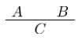
| Implication | Conjunction | Negation | Disjunction | Bi-implication ("if and only if") |
|---|---|---|---|---|
| 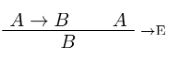 | 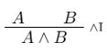 | 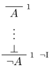 | 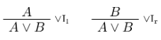 | 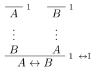 |
| 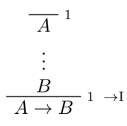 | 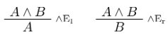 | 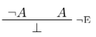 | 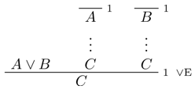 | 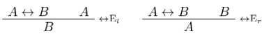 |
Truth and falsity: from false, you can conclude anything, and from nothing, you can conclude true.
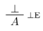, 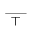
You can also derive this conjunction rule:
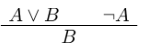
Backward reasoning: looking at the goal and seeing what rules need to be applied ("bottom-up")
Forward reasoning: starting at some hypotheses/assumptions
The general heuristic is to always work backwards, as much as possible. Only once you get stuck should you work from your assumptions or hypotheses.
If all else fails, try proof by contradiction.
Suppose a negation of a formula is true, prove that it's impossible, thereby proving the original formula.
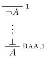
RAA stands for "reductio ad absurdum"
- derivable: a formula φ is "derivable" if we can prove φ with no global hypotheses (bottom line is φ, everything is closed). Then we write ⊢ φ.
- φ is derivable from hypotheses ψ₁..ψn if we can compute φ assuming ψ₁..ψn
- formulas φ and ψ are logically equivalent if ⊢ φ ↔ ψ
Principles:
- Proof by contradiction: assume the contradiction, and show false, thereby proving the original.
- Double negation elimination: ¬ ¬ A ↔ A.
- Contrapositive: if A → B, then ¬ B → ¬ A
A general heuristic:
- Work backward from the conclusion, using introduction rules.
- When you run out of stuff to do, work forward with elimination rules.
- If you get stuck, [insert proof by contradiction meme]
Syntax:
- derivation, proofs
- Γ ⊢ A ("A is derivable from hypotheses in Γ")
Semantics:
- truth and falsity
- truth assignment says which propositional letters are true
- valuation says which formulas are true
provable: if there is a formal proof of a formula (syntactic)
tautology/valid: if true under any truth assignment (semantic)
soundness: if a formula is provable, it is valid (if ⊢ A, then ⊨ A)
completeness: if a formula is valid, it is provable (if ⊨ A, then ⊢ A)
Proving soundness is easier than proving completeness.
A is a logical consequence of Γ if, given any truth assignment that makes every formula in Γ true, A is true.
functions: take different numbers of arguments, returns a result. e.g. \(mul(x,y)\), \(square(x)\)
predicates, relations: takes one or more arguments, is either true or false. e.g. \(even(x)\), \(divides(x,y)\)
formulas: say things. make assertions about objects in the domain.
Quantifiers:
- ∀x: "for all x"
- ∃x: "there exists an x"
Generally bind tightly: ∀x P ∨ Q == (∀x P) ∨ Q
free variable: variable that's not bound
sentence: a formula that has no free variables
| Universal quantification | Existential quantification | Equality |
|---|---|---|

|
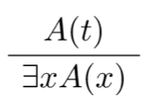 | |
| 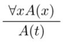 | 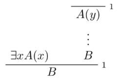 |
You can use implication to relativize quantification (put it into a specific domain).
Universal quantification, e.g. "every prime number greater than two is odd":
∀x (prime(x) ∧ x > 2 → odd(x))
Existential quantification, e.g. "some woman is strong":
∃x (woman(x) ∧ strong(x))
- TODO: some slides missed here
Let F be a set of function symbols, P a set of predicate symbols.
Model M for (F, P) consists of:
- non-empty set A ("domain", "universe")
- interpretation operation \((\cdot)^M\) for for symbols in F, P
Universe A can be any non-empty set.
only constraint: fM and PM have same number of arguments as f and P.
Truth defintion for formula Φ without quantifiers and free variables in model M by induction on the structure of Φ:
- M ⊨ ¬Φ ↔ not: M ⊨ Φ ↔ M ⊭ Φ
- M ⊨ Æ∧ Ψ ↔ M ⊨ Φ and M ⊨ Ψ
- M ⊨ Φ ∨ Ψ ↔ M ⊨ Φ or M ⊨ Ψ
- M ⊨ Φ → Ψ : if M ⊨ Φ then M ⊨ Ψ
- M ⊨ P(t₁, .., tn) ↔ (t₁M, ..., tnM) ∈ P^M
Interpretation of terms t^M:
- if t = c for constant c, then tM = cM
- if t = f(t₁,..., tn), then tM = fM(t₁M,...,tnM)
to interpret free variables, you use an environment.
an environment l: var → A (look up function) interprets free variables in the domain
terms are built from variables, constants, function symbols
- variables are interpreted according to environment
- cnstants are interpreted according to \((\cdot)^M\)
- function symbols are interpreted according to \((\cdot)^M\)
Truth of formula Φ in model M wiht universe A with respect to environment e is defined by induction on the structure of Φ.
Interpretation \(t^{M,l}\) of term t is
\begin{align} t^{M, l} = \begin{cases} l(x) &&\text{if } t = x \text{ for a variable } x \\ c^M &&\text{if } t = c \text{ for a constant } c \\ f^M (t_1^{M, l}, \ldots, t_n^{M, l}) &&\text{if } t = f(t_1, \ldots, t_n) \end{cases} \end{align}by induction on term structure.
M ⊨l ∀x HI ↔ for all a ∈ A it holds that \( M \models_{l [x \to a]} \phi \)
M ⊨l ∃x Φ ↔ for some a ∈ A it holds that \( M \models_{l [x \to a]} \phi \)
For all models M and all environments e, such that M ⊨l Φ₁ and ... and M ⊨l Φn hold, it also holds that M ⊨l ψ
Formulas φ and ψ are logically equivalent (φ ≡ ψ) if for all models M and environments l, M ⊨l φ ↔ M ⊨l ψ
i.e. φ and ψ are true in precisely the same models when interpreted with the same environments.
theorem: φ ≡ ψ ↔ φ ⊨ ψ and ψ ⊨ φ
Let φ be a formula, and Γ be a set of formulas.
φ is satisfiable iff there is some model M and some environment l such that M ⊨l φ
φ is valid iff M ⊨l φ holds for all models M and all environments l in which φ can be checked.
Γ is consistent/satisfiable iff there is some model M and some environment l such tat M ⊨l ψ for all ψ ∈ Γ
for all formulas φ, ψ: φ ≡ ψ means that φ ↔ ψ is valid
Example: "Marie and Jan are clever."
Specification and model used:
two predicates:
- CC(x): x is clever
- LL(x): x has learned logic
two constants:
- m: Marie
- j: Jan
model M:
- domain A = the set of all humans
- C^M = { x ∈ A | x is clever }
- LL^M = { x ∈ A | x has learned logic }
- j^M = Jan
- m^M = Marie
Then:
- "Marie and Jan are clever": C(m) ∧ C(j)
- "Not everybody is clever": ¬∀x C(x)
- "Somebody has learned logic": ∃x LL(x)
- "Not everybody has learned logic, but Marie and Jan have": ¬∀x LL(x) ∧ LL(m) ∧ LL(j)
∀ and →:
- ∀x(LL(x) → C(x)): "everyone who has learned logic is clever"
- not the same as ∀x LL(x) → ∀x C(x): "if everyone has learned logic, everyone is clever"
∃ and ∧:
- ∃x(L(x) ∧ C(x)): "some logicians are clever"
- not the same as ∃x(L(x) → C(x)): "if someone is a logician, they are clever"
Formulas with free variables express properties and relations:
- no free variables: a sentence
- one free variable: a property
- two or more free variables: a relation
If you move a negation around ∀, it becomes ∃, and vice versa.
It also holds that:
-
∀x(φ ∧ ψ) ≡ ∀x φ ∧ ∀x ψ
- BUT in general doesn't hold for ∨
-
∃x(φ ∨ ψ) ≡ ∃x φ ∨ ∃x ψ
- BUT in general doesn't hold for ∧
In general, you can't move quantifiers through an implication.
Order of repeated ∀ or ∃ doesn't matter. But if you have both ∃ and ∀, the order is important.
Interpretation: specifying the meaning of a predicate symbol.
- unary predicate P: set of elements of domain D for which P is true.
- constant c: an element of domain D
- function f with arity n: function mapping n elements of domain D to another element of D
- relation R with arity n: set of n tuples of elements of domain D for which R is true
You can find the truth value of sentences intuitively.
Completeness: if formula A is logical consequence of set of sentences Γ, then A is provable from Γ.
Soundness: if A is provable from Γ then A is true in any model of Γ
Recap from logic and sets:
- empty set Ø = {x | false}
- universal set U = {x | true}
- union A ∪ B = {x | x ∈ A or x ∈ B}
- intersection A ∩ B = {x | x ∈ A and x ∈ B}
- complement Ā = {x | x ∉ A}
- difference A \ B = {x | x ∈ A and x ∉ B}
Theorems:
- A ∩ (B ∪ C) = (A ∩ B) ∪ (A ∩ C)
- (A \ B) \ C = A \ (B ∪ C)
definitions of properties:
- reflexivity: ∀a R(a,a)
- transitivity: ∀a,b,c (R(a,b) ∧ R(b,c) → R(a,c))
- antisymmetry: ∀a,b (R(a,b) ∧ R(b,a) → a = b)
partial order:
- reflexive
- transitive
- antisymmetric
total order:
- partial order
- ∀ a,b (R(a,b) ∨ R(b,a))
strict partial order: partial order but irreflexive
strict total order:
- strict partial order
- ∀ a,b (R(a,b) ∨ (a=b) ∨ R(b,a))
equivalence relation:
- reflexive (∀a, a ≡ A)
- symmetric
- transitive
Set of natural numbers is N ∈ (0,∞)
Principle of induction: let P be a property of natural numbers. Suppose P holds for zero, and whenever P holds for a natural number n, then it holds for its successor n+1. Then P holds for every natural number.
As a natural deduction rule:
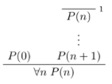
Let A be any set, suppose a is in A, and g: N × A → A. Then there is a unique function f satisfying:
- f(0) = a
- f(n+1) = g(n, f(n))
Typically to prove something about a recursively defined function is to use induction.